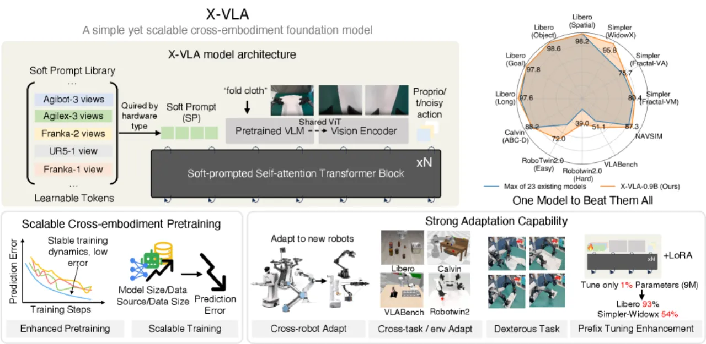
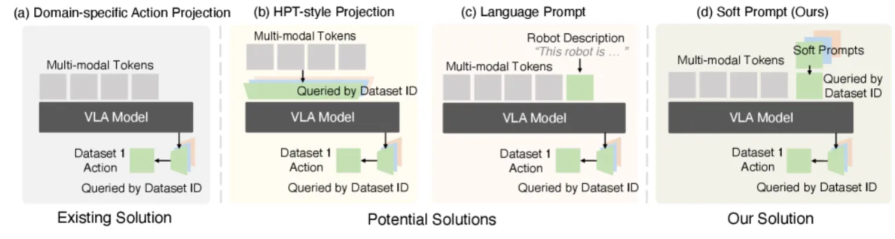
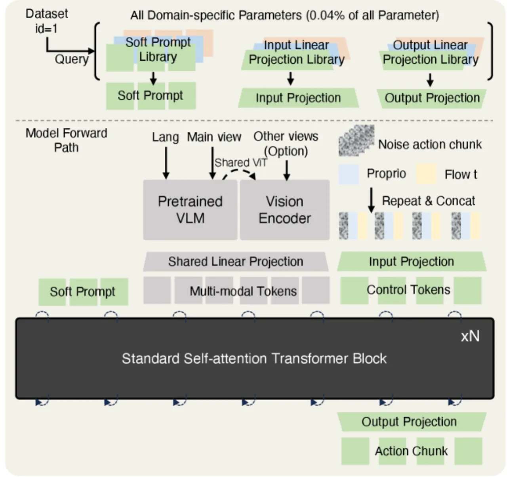
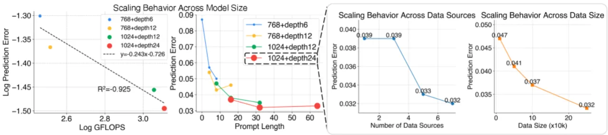
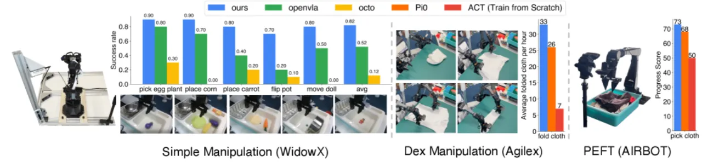
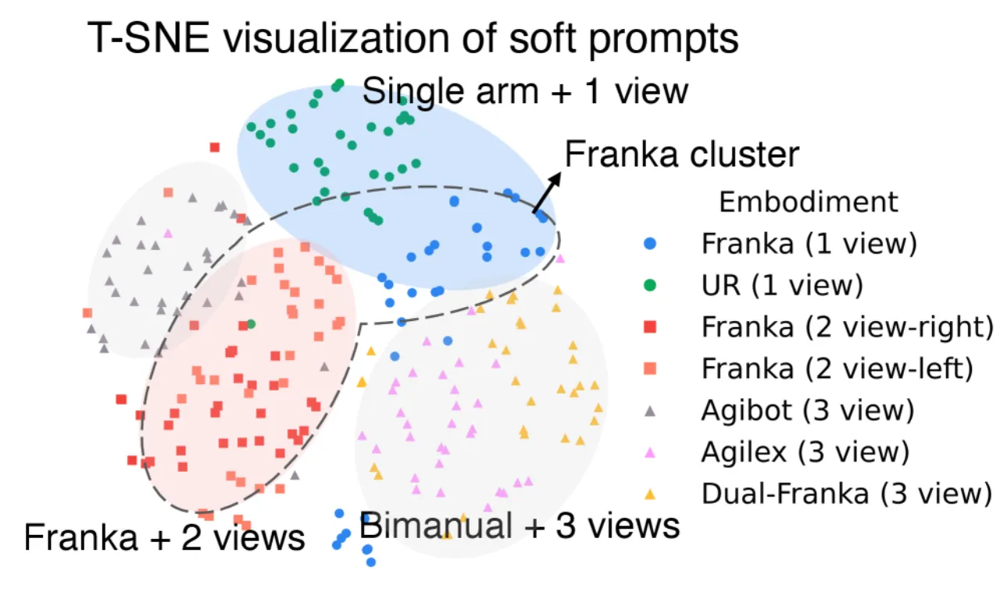

X-VLA 提出以可学习的软提示（soft prompt）作为形态标识符，解决跨形态异构数据联合训练的核心难题。仅凭 0.9B 参数，在 5 个仿真基准上全面超越现有最优方法，并以仅 1% 的参数量（9M via LoRA）实现与 3B 模型 π₀ 相当的 PEFT 性能，同时在三种真实机器人平台上验证了迁移能力。
当前 VLA 模型在跨平台联合训练时面临严峻的异构性挑战：不同机器人平台的观测空间、动作空间、相机配置差异显著，简单混合训练反而会损害单平台性能。如何在利用多平台数据规模优势的同时，保留各平台的专有特征，是实现真正通用机器人策略的关键瓶颈。
"The success of VLA models, particularly their ability to rapidly adapt to out-of-distribution (OOD) domains, hinges on pretraining with large and diverse robotics datasets that span multiple robotic architectures and task scenarios."


论文在 Table 1 的消融路径中系统验证了各设计选择的贡献：从无预训练基线（验证误差 4.1，适配成功率 39.6%）出发，逐步引入动作对齐、意图抽象、平衡采样、Transformer encoder 替换 DiT、编码 pipeline 改进，最终加入软提示，将适配成功率提升至 73.0%，验证误差降至 0.038。
X-VLA 采用双流 Transformer 架构：高维流（多视角图像经 Florence-Large VLM 编码）与低维流（本体感知状态 + 动作 token + 时间嵌入）并行输入标准 Transformer encoder（24 层，hidden size 1024），输出通过 flow-matching 策略生成动作序列。每个数据源分配一组随机初始化的可学习软提示向量，在训练中自动捕获该平台的硬件配置差异。

为每个数据源分配一组可学习嵌入向量，随机初始化后通过端到端训练优化，自动编码各平台的形态配置信息（硬件类型、相机布局、控制接口等）。不同于硬编码模板或语言描述，软提示无需人工设计，能在训练中自适应捕获平台差异。T-SNE 可视化（Figure 8）显示，相似平台的软提示在嵌入空间中自然聚类。
采用 flow-matching 范式生成动作序列，训练目标为： ℒBCFM(θ) = 𝔼t∼𝒰(0,1),(o,A)∼𝒟[‖vθ(At,o,t)−(A−A⁰)‖²]。 动作表示采用末端执行器笛卡尔坐标 + Rotate6D 旋转编码，并引入时序下采样（temporal downsampling）生成 30 个锚点覆盖 4 秒时域，以抽象动作意图，缓解异构数据的监督信号稀疏问题。

在 6 个仿真基准（LIBERO-Spatial/Object/Goal/Long、Simpler-WidowX、Calvin、RoboTwin-2.0、VLABench、NAVSIM）和 3 种真实机器人平台上进行全面评估。主要基线包括 SpatialVLA（4B）、ThinkAct（7B）、MemoryVLA（7B）、GR00T-N1（3B）、π₀（3B）、UniVLA（9B）等。
| 方法 | 参数量 | Simpler WidowX (VM) | Simpler WidowX (VA) | LIBERO-Spatial | LIBERO-Object | LIBERO-Goal | LIBERO-Long | Calvin (ABC→D) | VLABench (Easy/Hard Avg) |
|---|---|---|---|---|---|---|---|---|---|
| SpatialVLA | 4B | 75.1 | 70.7 | 88.2 | 89.9 | 78.6 | 55.5 | – | – |
| MemoryVLA | 7B | 77.7 | 72.7 | 98.4 | 98.4 | 96.4 | 93.4 | – | – |
| GR00T-N1 | 3B | 45.0 | 48.4 | 94.4 | 97.6 | 93.0 | 90.6 | – | 39.7 / – |
| π₀ | 3B | 58.8 | 56.8 | 96.8 | 98.8 | 95.8 | 85.2 | – | 46.4 / 16.4 |
| UniVLA | 9B | – | – | 95.4 | 98.8 | 93.6 | 94.0 | 4.41 | – / 81.7 |
| X-VLA (Ours) | 0.9B | 80.4 | 75.7 | 98.2 | 98.6 | 97.8 | 97.6 | 4.43 | 70.0 / 39.0 |
论文指出："Across FIVE benchmarks, we establish a new SOTA, achieving substantial improvements over aggregated prior models." X-VLA-0.9B 在 Simpler-WidowX VM/VA 分别达到 80.4 / 75.7，超越所有对比方法，且参数量仅为最大竞争对手（9B）的 1/10。

使用 LoRA 仅微调 9M 参数（骨干网络的 1%），与 π₀（3B 全参数微调）对比：
| 方法 | 可调参数 | LIBERO-Spatial | LIBERO-Object | LIBERO-Goal | LIBERO-Long | Simpler-WidowX |
|---|---|---|---|---|---|---|
| π₀ | 3B | 96.8 | 98.8 | 95.8 | 85.2 | 55.7 |
| X-VLA-LoRA | 9M | 95.4 | 96.6 | 96.0 | 84.2 | 54.2 |
论文表述："These scores are comparable to fully finetuned models"，"comparable to π₀ despite requiring 300× fewer parameters."

X-VLA 在模型规模（最大 0.9B）、数据多样性（7 个来源）、数据量（290K episodes）三个维度均呈现验证误差随规模增大单调下降的趋势，且未见饱和，这与大语言模型的 scaling law 现象相符，表明进一步扩展仍有明显收益空间。
论文指出："X-VLA-0.9B achieves strong performance, its scale remains modest compared to large foundation models in the vision–language and language domains. This limitation stems primarily from computational constraints and the limited availability of high-quality robotics data." 当前机器人数据集的多样性和规模与语言/视觉语言领域相差悬殊，进一步扩展模型容量或骨干网络的预训练 VLM 是潜在方向，但资源需求极高。此外，VLA 模型的 scaling law 及形态多样性如何与模型容量交互，目前仍是开放问题。
论文承认："the supervision provided by low-dimensional action labels remains inherently limited in information content. These labels, while essential for direct control, capture only a narrow view of the underlying task structure and often fail to convey higher-level reasoning, intent, or multi-step dependencies." 当前的时序下采样策略（temporal downsampling）仅是部分缓解，未能从根本上丰富监督信号。未来方向包括引入 3D 空间推理线索、物理动力学、中间子目标标注，或利用原始输入流的自监督目标辅助学习。
论文指出，尽管 X-VLA 在微调和高效特化上表现出强适应性，"realizing the vision of a truly generalist embodied model that can be seamlessly deployed to arbitrary downstream tasks without additional engineering or retraining remains an open challenge." 当前部署仍需为目标平台收集少量演示数据进行后训练（post-training），尚无法实现真正的零样本跨平台泛化。